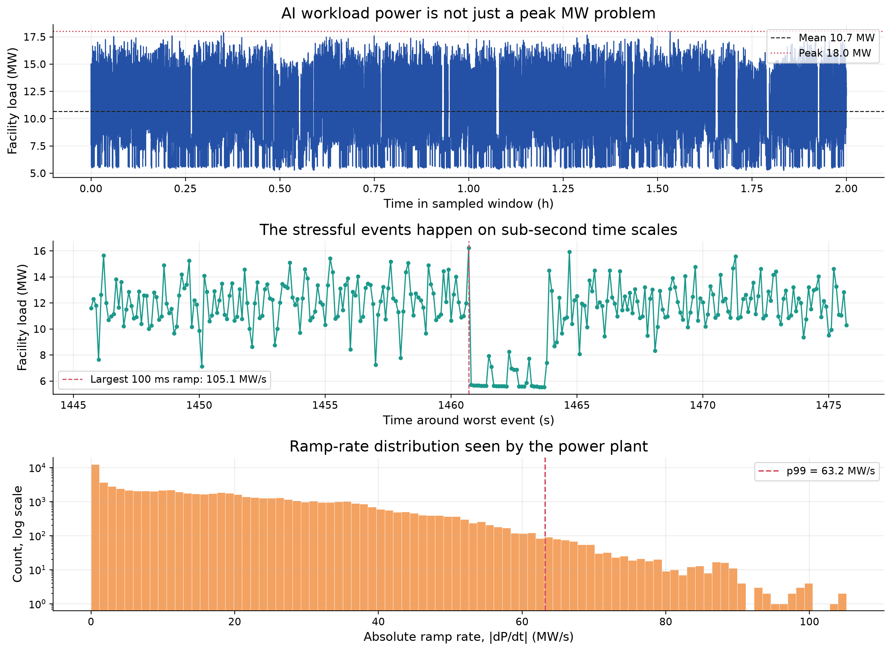
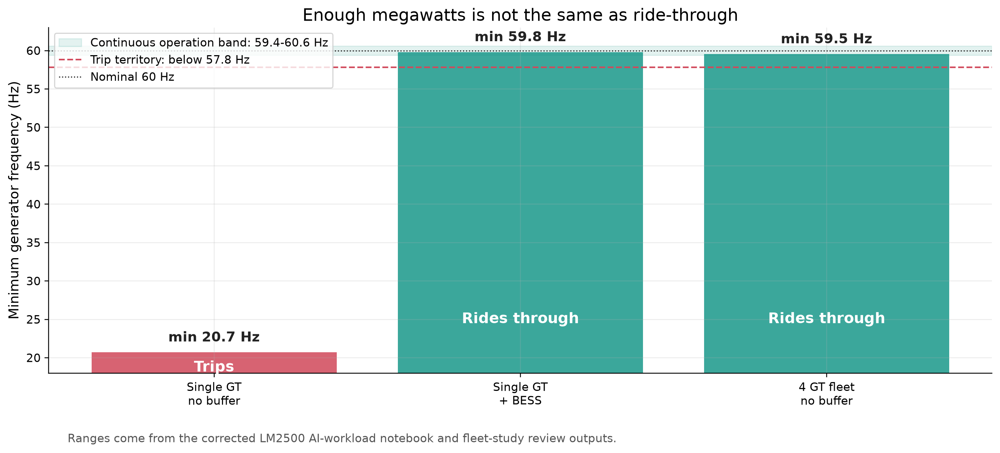
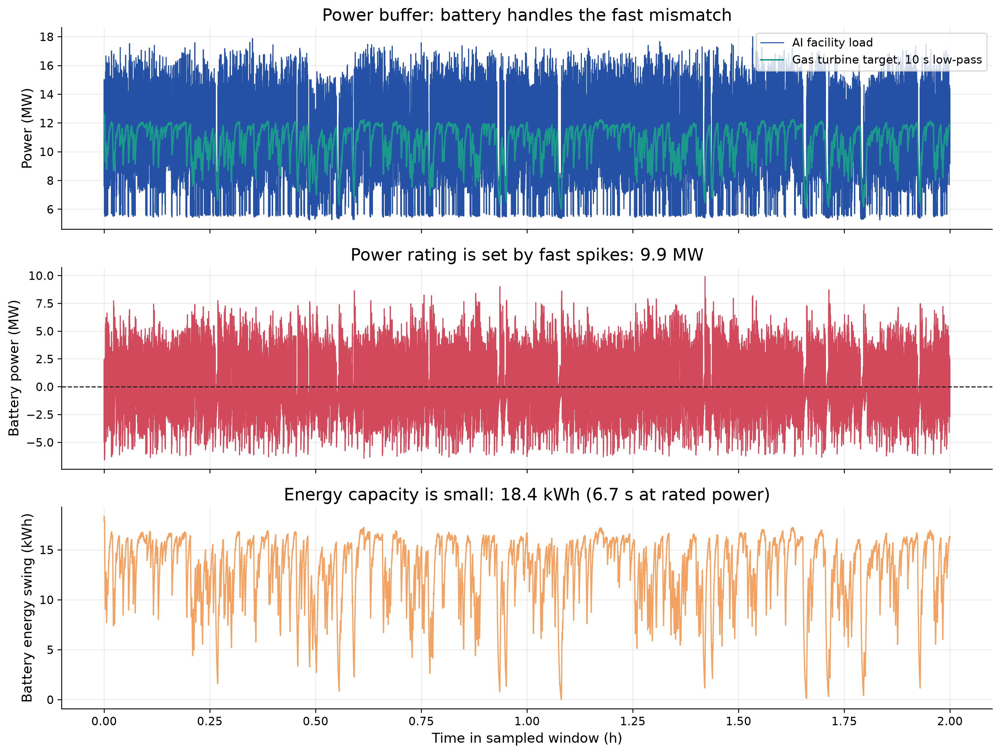
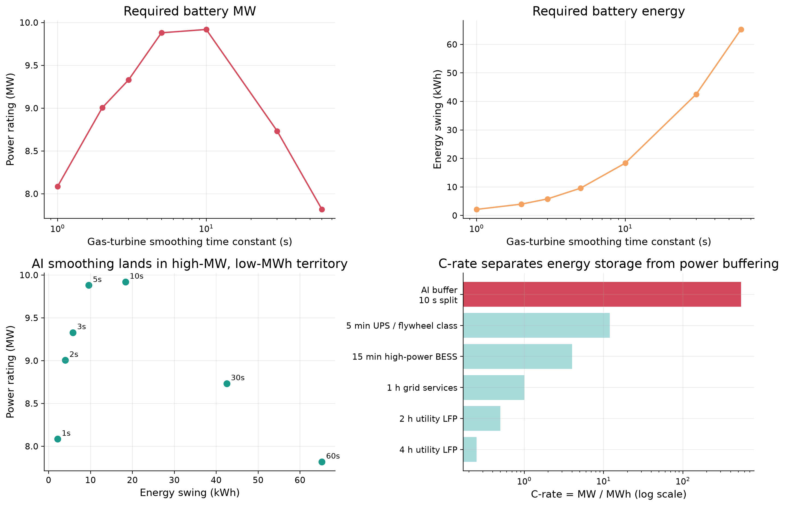
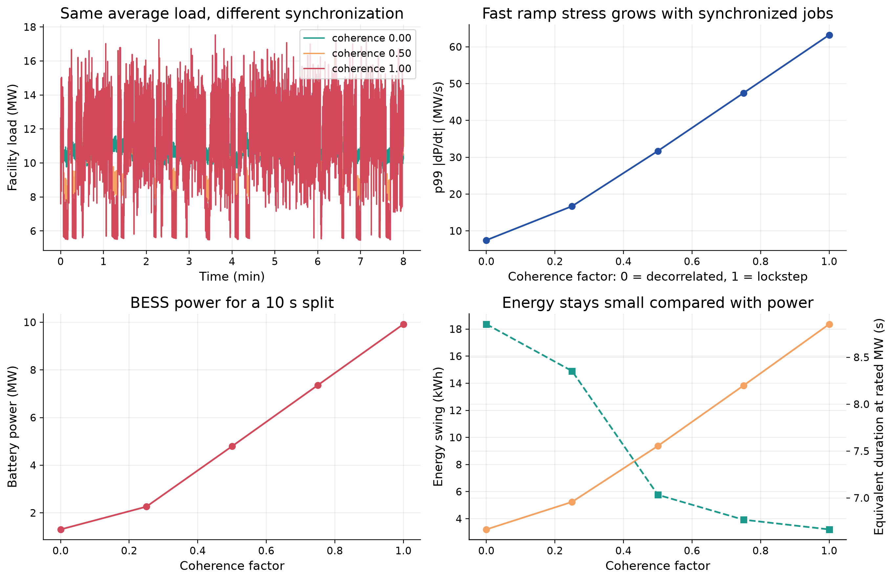
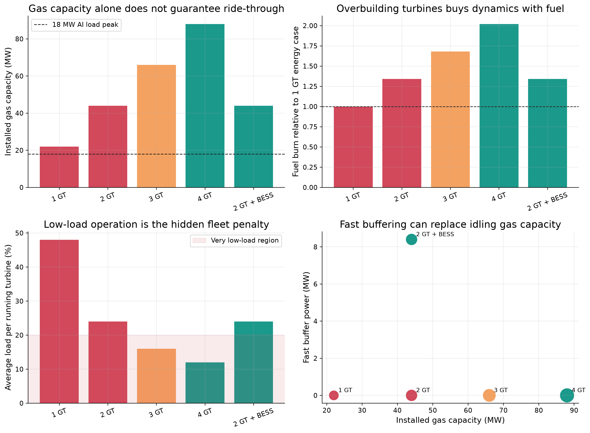
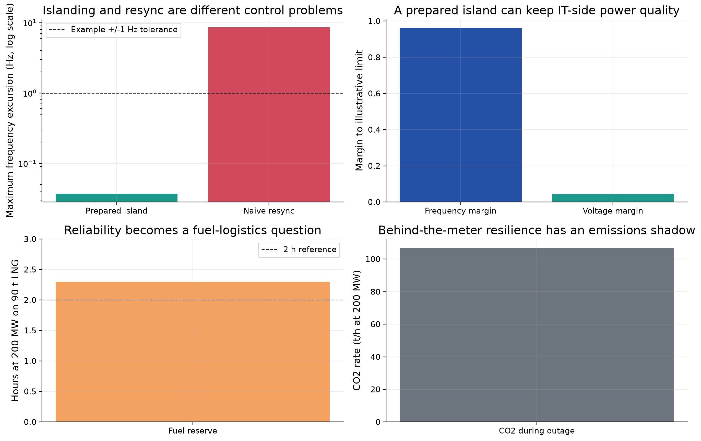
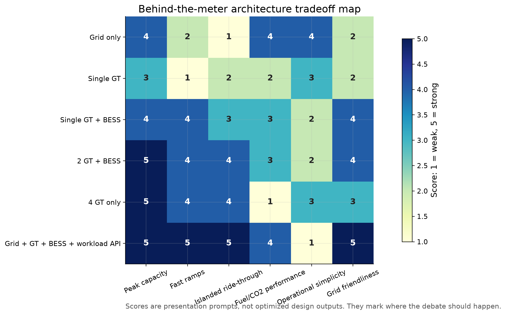

Behind-the-meter generation, AI data centers, and the hidden dynamics problem.
Rough deck generated from the DataCenter research repo, 2026-09-02.
AI power discussions often start with one number: How many megawatts?
This deck asks a more awkward question: Can the proposed power system follow the AI load fast enough to keep operating?
That brings turbines, batteries, grid ties, software schedulers, fuel logistics, and emissions into the same conversation.
Behind-the-meter generation does not make a data center independent from power-system physics.
It changes who owns the physics:

The average load and peak load are not enough.
The stressful events happen when thousands of devices change state together. Those fast ramps can arrive in fractions of a second, much faster than a gas turbine can comfortably follow.
Should large AI campuses have ramp-rate obligations?

A turbine can have enough rated power and still fail the job.
Rated power
Can it eventually supply the load?
Frequency ride-through
Can it survive the first few seconds while the load changes?
That second question is often missing from casual AI-power discussions.

In this case, the battery is not mainly storing energy for hours.
It is absorbing and injecting power for seconds while the turbine follows the slower part of the load.

Most utility-scale batteries are built for roughly 1 to 4 hours.
The AI fast-ramp problem can look like seconds of support at very high power.
That is closer to UPS, flywheel, supercapacitor, or high-power inverter behavior than ordinary long-duration energy shifting.
Should data-center UPS assets become part of the power-control strategy?

If many independent jobs run at different times, their power swings partly cancel out.
If one huge training job makes thousands of accelerators move together, the facility can act like one giant synchronized load.
Is the enemy total energy, peak power, or synchronization?

More turbines provide more spinning inertia and more total ramp capability.
But running many turbines lightly loaded can waste fuel and increase maintenance exposure.
A small fast buffer may be cheaper and cleaner than keeping extra turbines spinning at poor part load.

An islanded site can survive if generation and load are prepared.
But reconnecting to the grid requires phase, frequency, and voltage matching. A naive reclose can create a much larger electrical event than the original outage.
Who owns resynchronization risk for behind-the-meter generation?

None of these physics are new to power engineers.
What is timely is the combination:
An AI scheduler could expose a power-shaping API:
Should AI training schedulers be part of the energy system design?
The AI power question is not only: Where will the energy come from?
It is also: Who is responsible for making intelligence electrically well behaved?
From the repo root:
pixi run python tools/presentation/run_all.py
Individual scripts and outputs are documented in IMPLEMENTATION_NOTES.md.